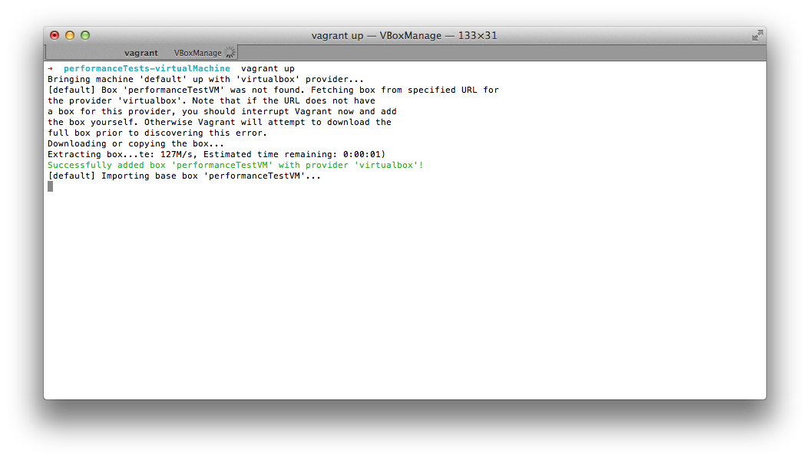
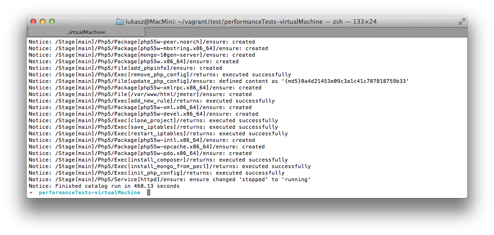
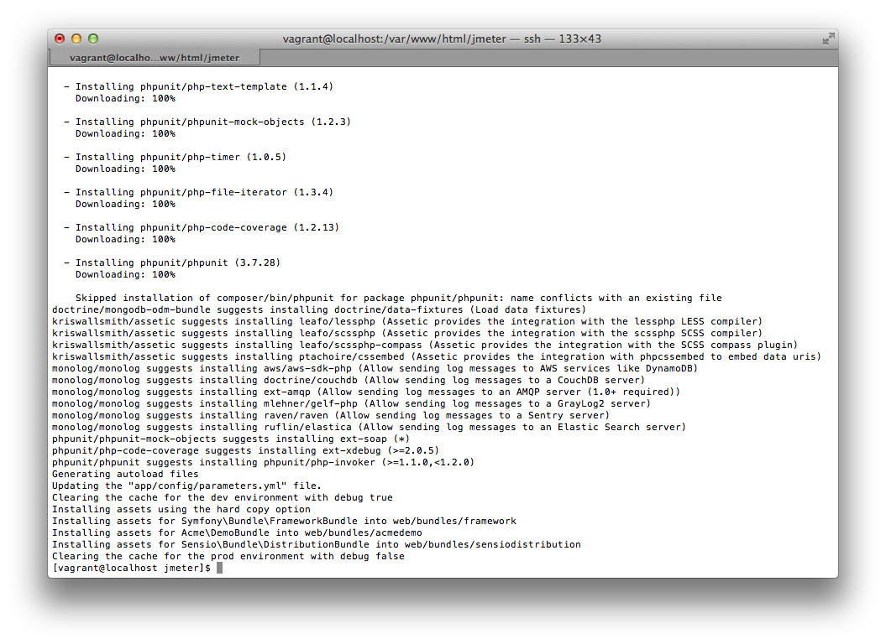
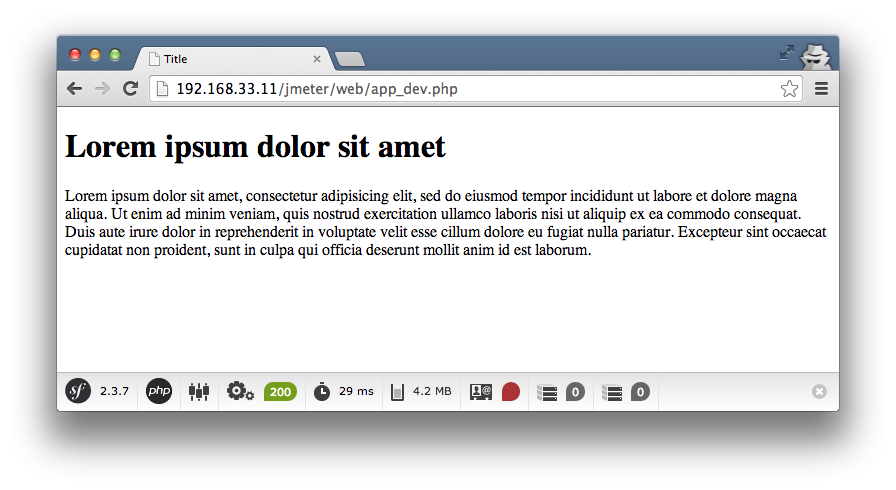
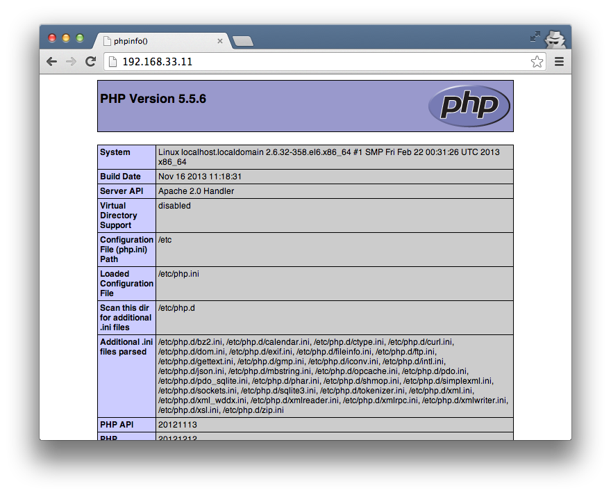

Configure virtual environment
I'm so pround you are here. First of all.. In this short document you have simple instruction how to run live tutorial. You can do this tutorial on live examples. All you need is to install Vagrant in the newest version (I'm using Vagrant 1.3.5 for OSX) You can choose your package here. You also need a Virtualbox (I'm using Virtualbox 4.3.4 for OSX)
Now you can download my vagrant environment configuration files. Extract the package and open the directory in your terminal.

Then run: vagrant up. It'll last a few minutes. Vagrant have to download a vagrant box from the web. During provisioning also php5.5.x and MongoDb will be installed. Be patient.. :) You can follow status in the terminal. You will see a lot of information like:
Notice: /Stage[main]/Php5/Package[php55w.x86_64]/ensure: created
After all your log should looks like:

Using vagrant ssh command you can log in via ssh to the virtual machine. Then go to the project files in /var/www/html/jmeter using cd /var/www/html/jmeter command and run sh setup.sh Follow the screen because sometimes you have to put your github credentials to clone vendors by composer (It's github API security case)
If script end installing vendors you will be able to run application on address 192.168.33.11/jmeter/web/app_dev.php.


You have also phpinfo() available on 192.168.33.11.

After work all you need is to run vagrant halt. Next time you can run vagrant faster. Use --no-provision parameter. vagrant up --no-provision
If it was your first time with Vagrant.. now you know what it means ;)
When you see Vagrant..

source: http://devopsreactions.tumblr.com
Mount remote resource via SSH
If you would like to make some changes in the project, you can mount remote virual directory using sshfs (you need Fuse package).
After ensuring that you've got it, run:
sshfs vagrant@192.168.33.11:/var/www/html/jmeter/ /path/to/your/local/directory -ocache=no
After that you will be able to open project in your IDE.